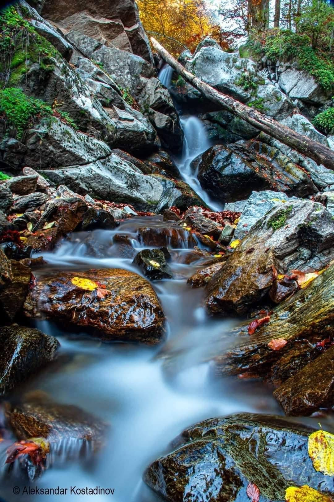
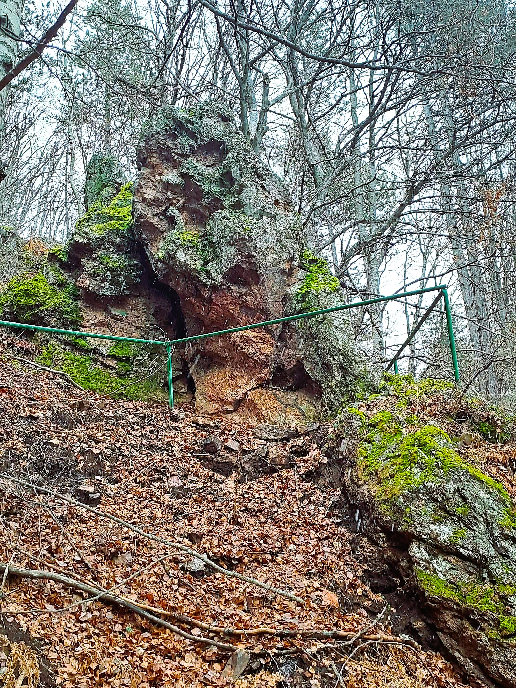
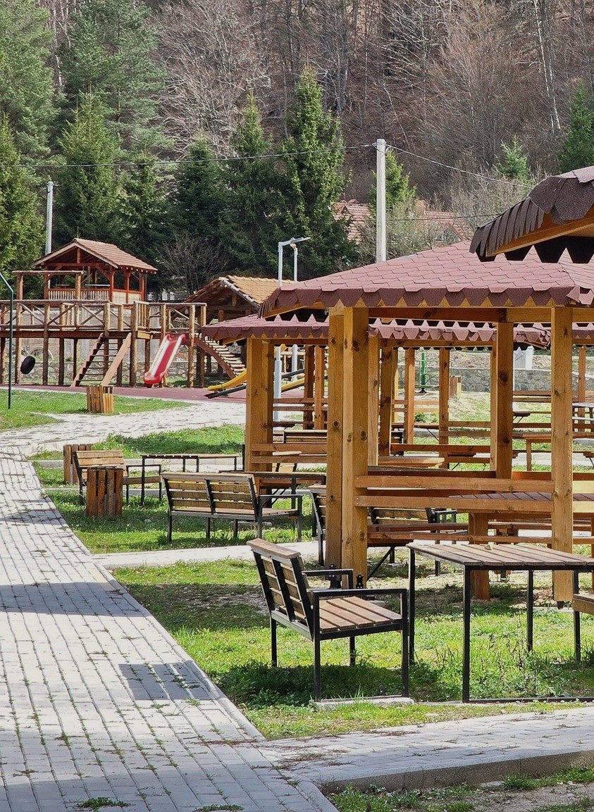
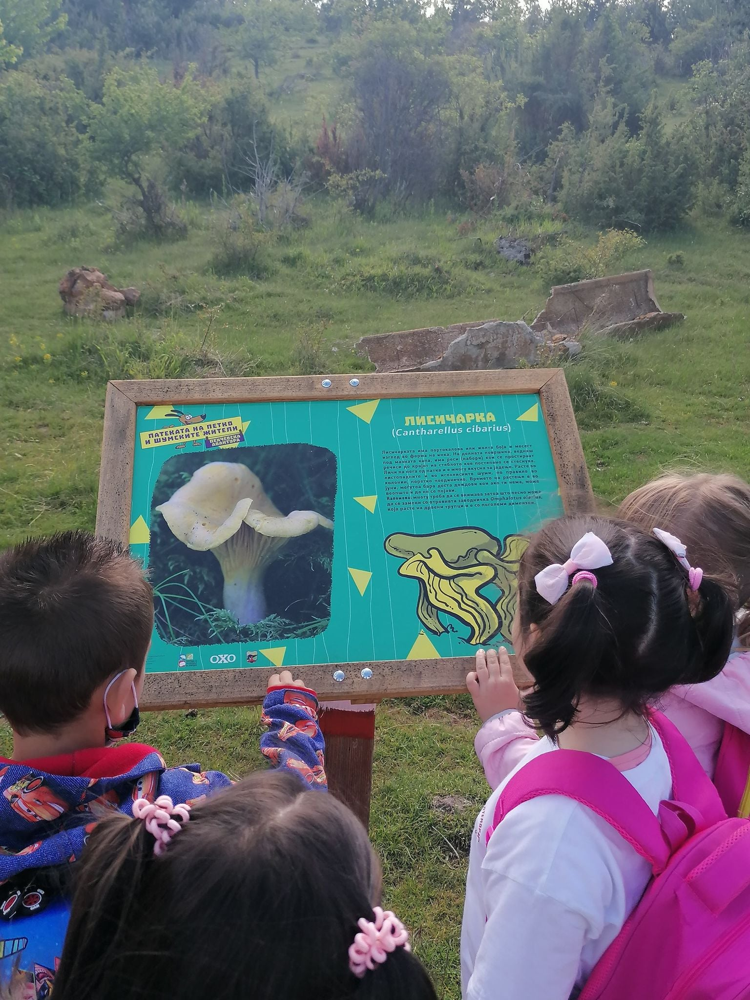
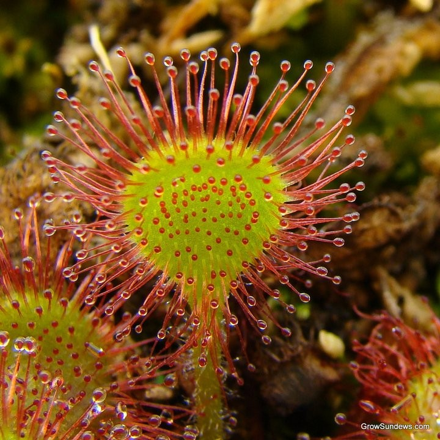
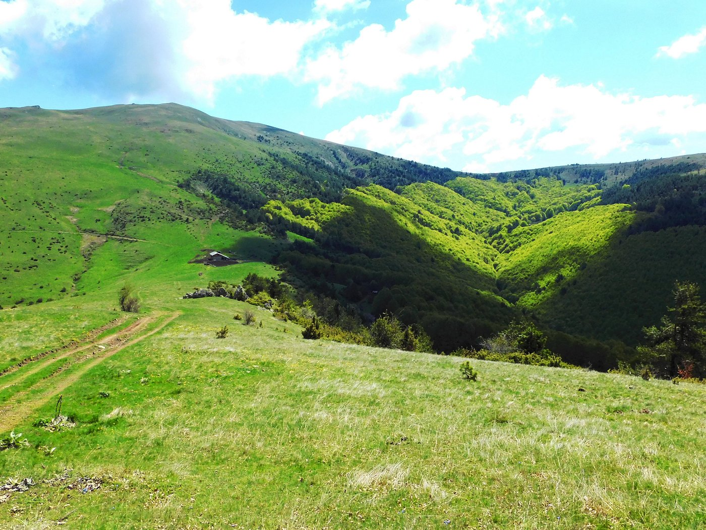
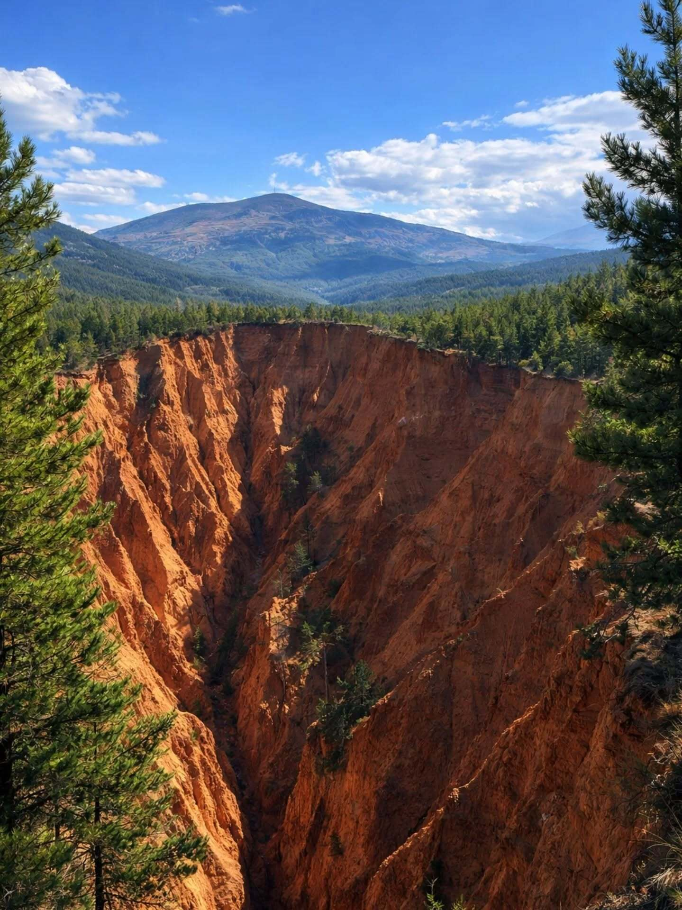

Пехчевски Водопади
Искусете ја моќта на седумте малешевски водопади.

Езерце Парк
Рекреативен центар за целото семејство.

Вртена Скала
Мистична карпа со неверојатна форма.

Равна Река
Срцето на туризмот во Пехчево.

Едукативен Центар
Центар за едукација и заштита на природата.

Манастир Св.Петка
Духовно светилиште над градот.

Патеката на Петко
Едукативна патека за најмладите.

Јудови Ливади
Местото на инсектојадната „Муволовка“.

Врв Кадиица
Највисокиот врв на Влаина планина.

Вулканска купа Буковик
Истражете го древниот вулкански конус.
 (1).jpg)
Кукуљето
Природни камени скулптури.

Црнички Мелови
Спектакуларни земјени пирамиди.